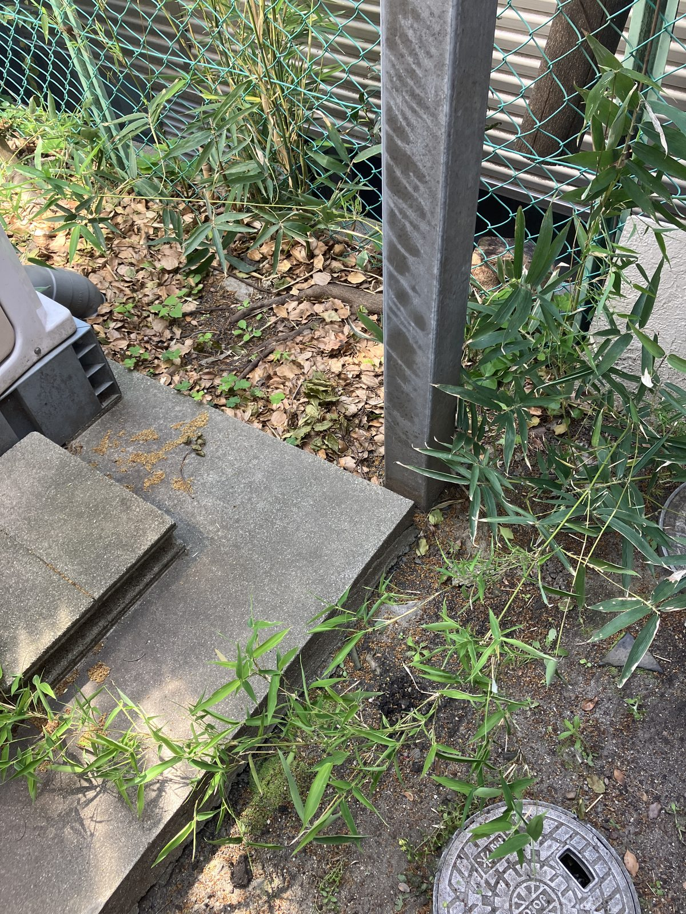
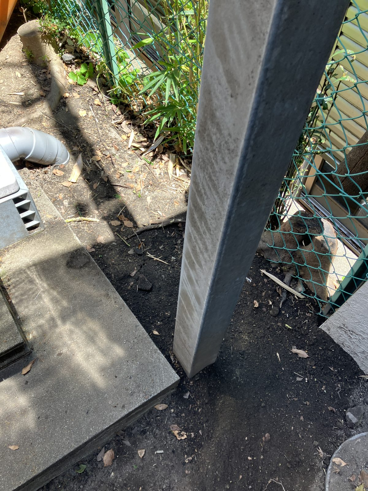
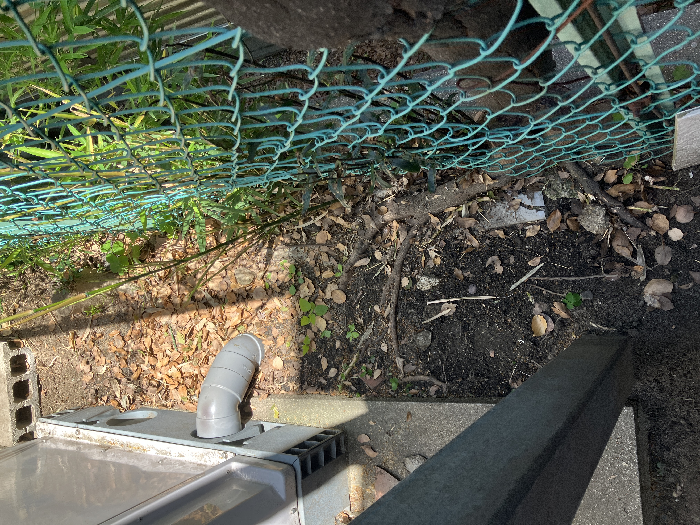
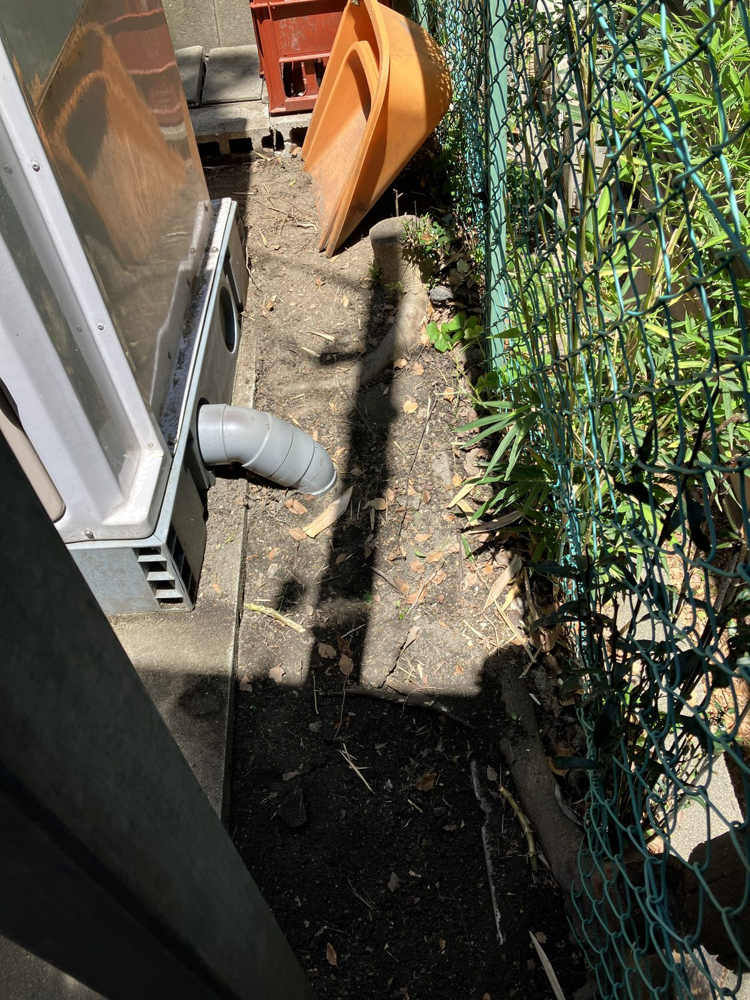
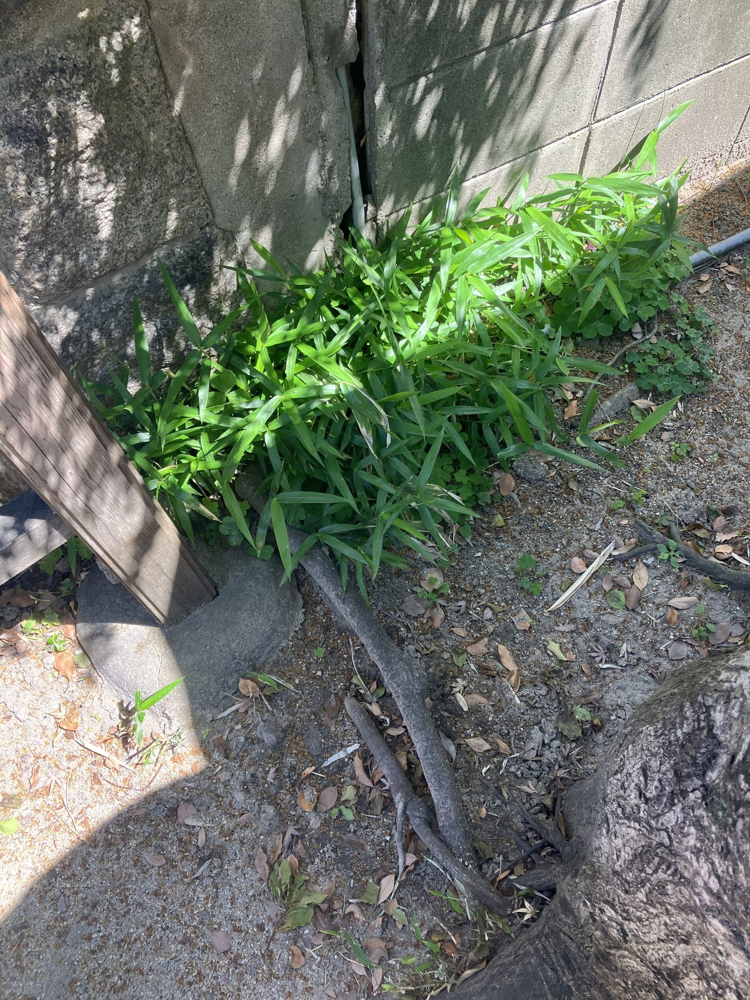
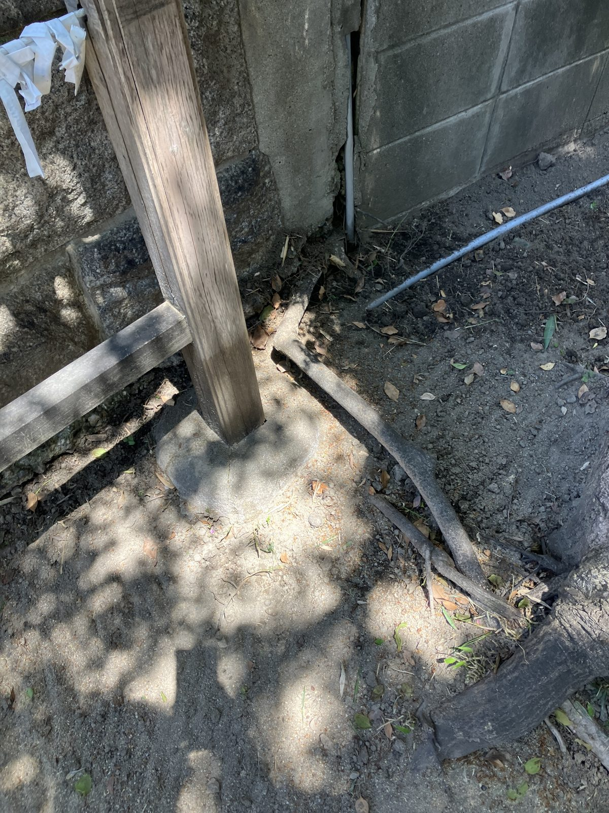
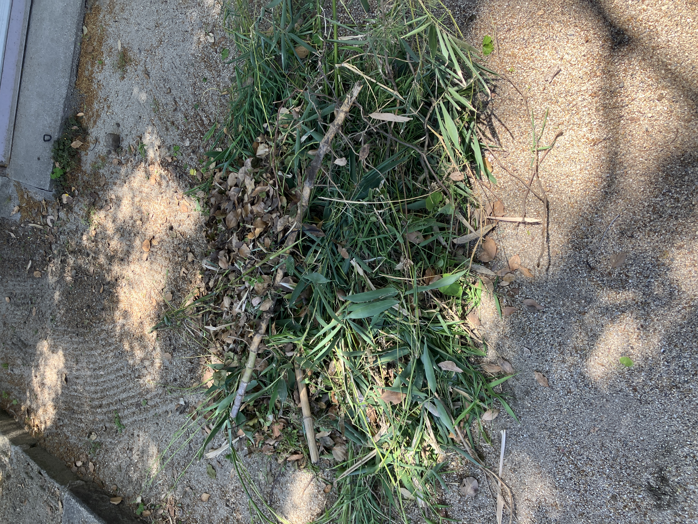
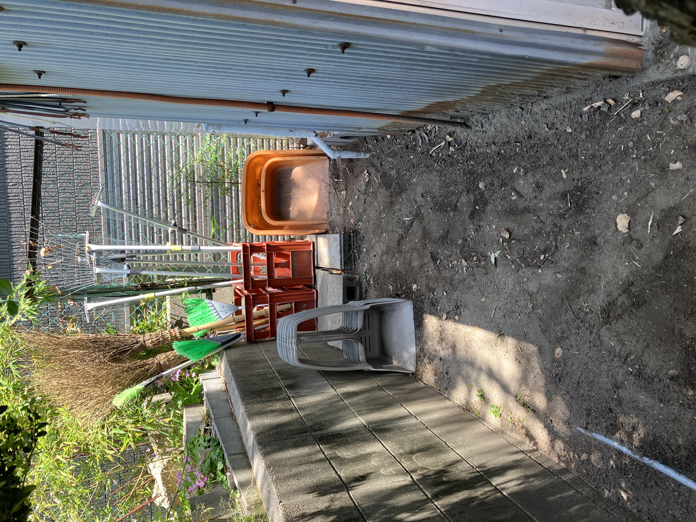

今日は町会の掃除用具を置いている場所まわりの清掃を行いました。笹や竹が成長してしっかり根を張っており、長年放置されていた感じがありました。暗く、どこか汚い雰囲気が漂う場所でした。

作業前
作業後根がしっかり張った笹は、こないだ買った道具では効率が悪く、もう少し大きくて力の入る道具が必要だと実感しました。気づけば2時間、黙々と格闘しておりました。

作業後
作業後
作業前
作業後
▲ 今回の清掃で出た落ち葉・刈り取った笹。これだけの量が溜まっていた。
2時間しっかり作業したおかげで、見違えるようにすっきりしました。太陽の光が入るようになったからか、以前より明るくなった気がします。

▲ 作業後の道具置き場全体。広々とスッキリ！